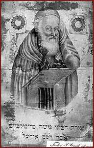

|  | ||
|
Under the leadership of Rabbi Moses Teitelbaum, a Hassidic center emerged
in Sátoraljaújhely, where he was the rabbi from 1808.
He was famous for his knowledge as well as for his yeshiva.
Many people pilgrimaged from great distances to see him.
His son and descendents were Hassidic rabbis in Máramarossziget (Sighet), and
after his death his grandson became the rabbi of Sátoraljaújhely. |
||
|
The ohel in Sátoraljaújhely, gravesite of Rabbi Moses Teitelbaum (Yismach Moshe), his wife, and Alexander, the rabbi of Komárom. | |